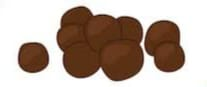
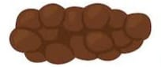
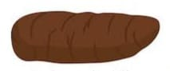
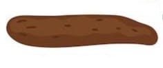
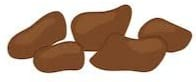
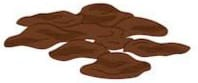
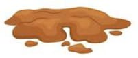

| Escala de Bristol de Consistência das Fazes | ||
|---|---|---|
| Tipo | Ilustração | Descrição |
| Tipo 01 |  | Pedaços separados, duros como amendoim |
| Tipo 02 |  | Forma de salsicha, mas segmentada |
| Tipo 03 |  | Forma dr salsicha, mas com fendas na superfície |
| Tipo 04 |  | Forma de salsicha ou cobra, lisa e mole |
| Tipo 05 |  | Pedaços moles, mas contornos nítidos |
| Tipo 06 |  | Pedaços aerados, contornos esgarçados |
| Tipo 07 |  | Aquosa, sem peças sólidas |